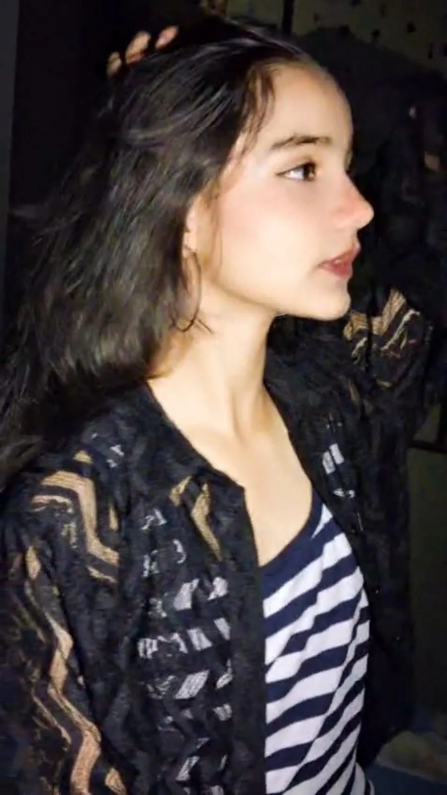
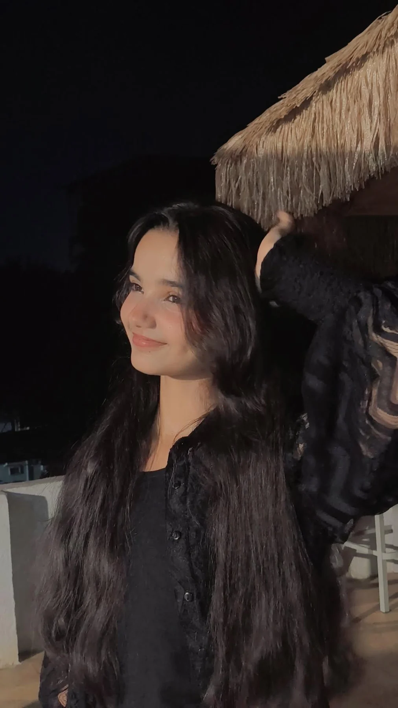
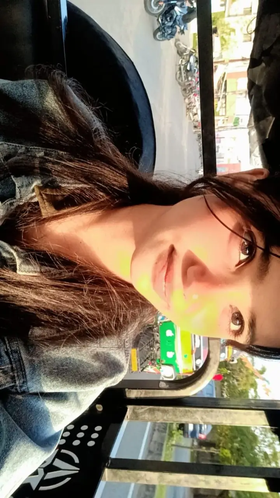
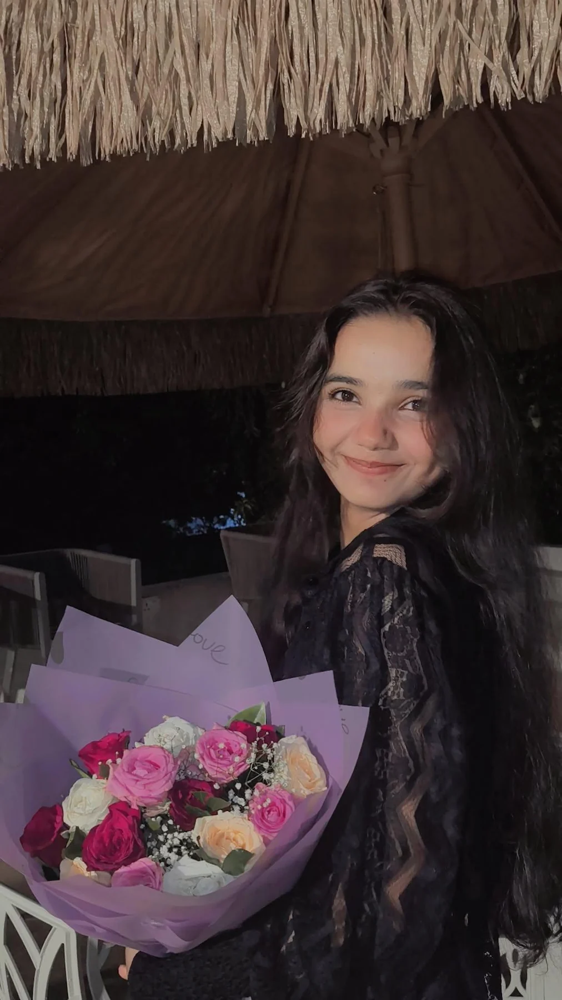
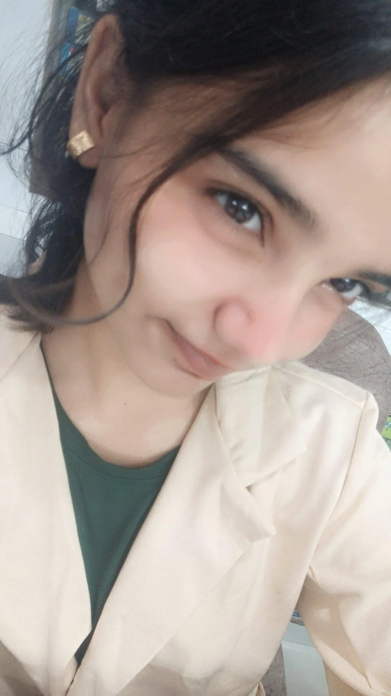
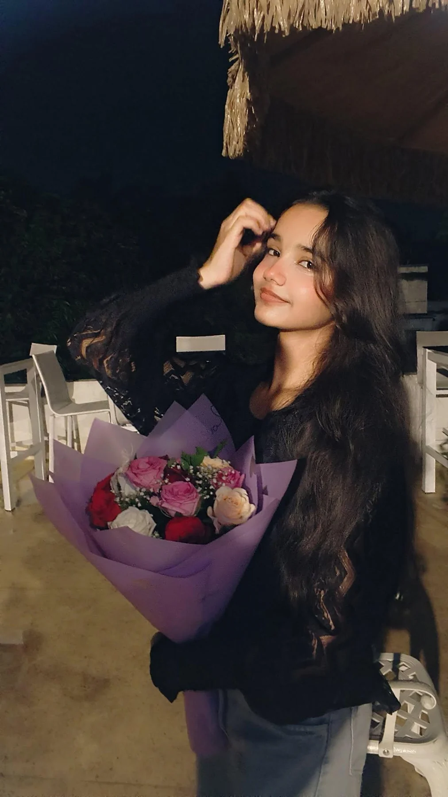

✦
a private little universe
For Akshita.
A small world made from real photographs, real sounds, moving memories, and all the little things I never wanted to let disappear.
tap anywhere · let the butterflies begin
A small world made from real photographs, real sounds, moving memories, and all the little things I never wanted to let disappear.
Nothing auto-plays until you choose it. The site is designed around deliberate taps, especially on phones.
I wanted something that felt less like a webpage and more like a place. So here it is: rooms for the photographs, the videos, the songs, the words, and the quiet part at the end.



Every room has its own rhythm. There is no rush. The whole point is to make the transitions feel like tiny discoveries.

↗Swipe through photographs like film stills. Tap one to step inside it.

↗Six moving fragments with explicit audio and mobile-safe controls.

↗A constellation opens into a message instead of a normal envelope.

↗A living wall for the pictures that deserve their own room.
 ↗
↗Four moods. One record room. Press play and let the page move.

↗The long ending. More words, more silence, and a place to come back to.
“I wanted to make a place where even silence would still feel like you.”for the person this whole universe keeps pointing back to